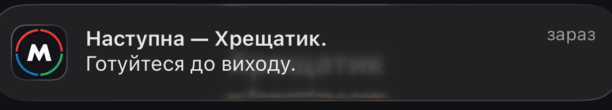
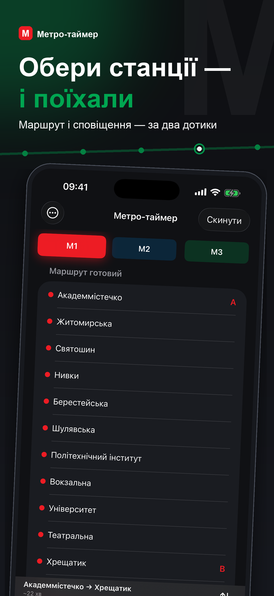
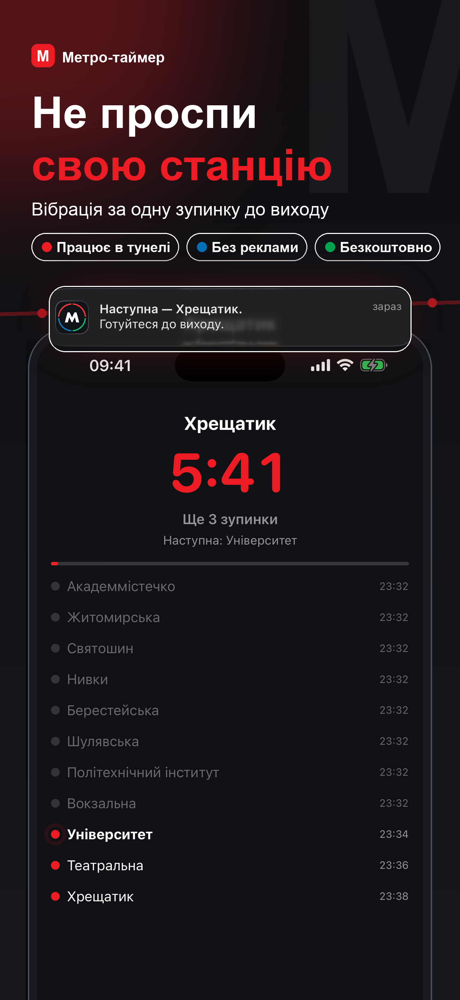
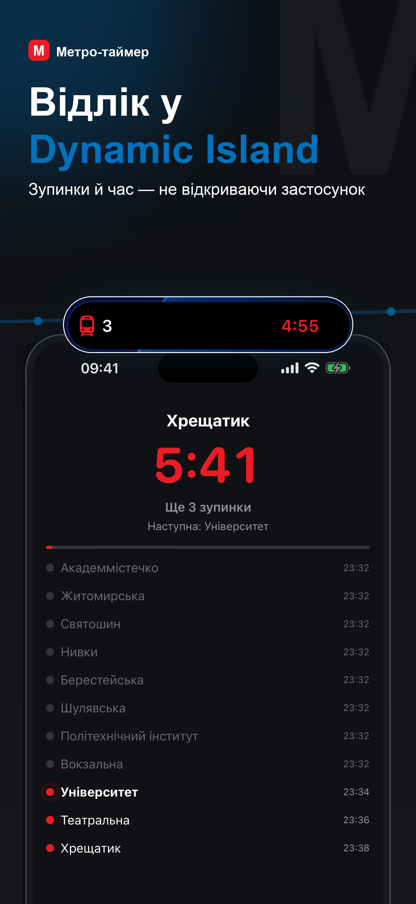
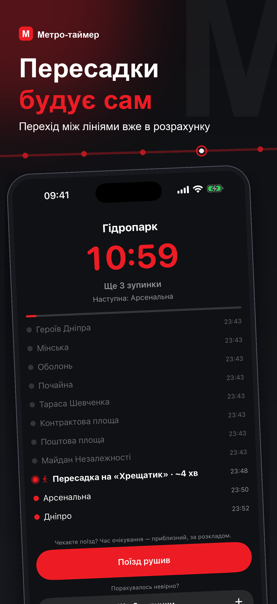
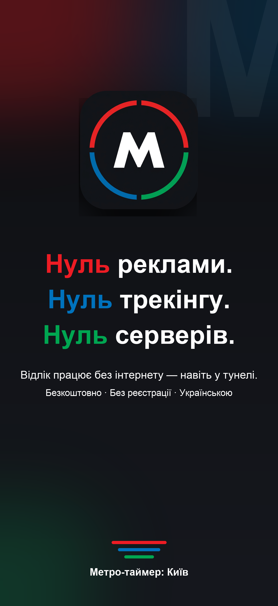

A ride countdown that lives in the Dynamic Island — with no GPS, no network, and no background execution.

On the metro you read, doze off, or put headphones on — and then you look up at the wrong station. Three things are unavailable to an app that wants to help, and only one of them is a choice.
Eight of the network's fifty-two stations are above ground. The rest are in tunnels, where satellites are not an option.
Same tunnels. Nothing can be fetched at the moment it is actually needed.
This one is a decision, not a limitation. They cost battery, invite App Review questions, and buy nothing a pre-scheduled notification does not.
So the train's position cannot be measured. It has to be computed — from a timetable, anchored to the single event a passenger can supply for free: the moment the train starts moving.
That one tap is the whole contract. Everything else follows from it.
Text(timerInterval:). No process has to stay alive for it to tick.Where the model is uncertain, the passenger is the sensor — and a correction never requires unlocking the phone.





Swipe to see all five.
Being explicit about this is part of the design, not a caveat bolted on afterwards.
Waiting for a train after a transfer. Genuinely unknowable — anywhere from zero to a full headway. The model books a quarter of the current headway rather than the “correct” half, because the two errors do not cost the same. Underestimate, and the countdown runs ahead of the train: the passenger looks up early and keeps riding. Overestimate, and the warning arrives after their station. The whole product exists to prevent the second one, so the estimate leans early on purpose — and a “train departed” button erases the uncertainty entirely.
The stop counter freezes in the background. With no background modes, ActivityKit cannot be handed a deferred update. The timer keeps running on its own, but “3 stops left” holds its last value until something wakes the app. That is the price of the third constraint above, and it was paid knowingly.
| Target | Contents |
|---|---|
| App | SwiftUI screens and app-only services: accelerometer, GPS corrector, air-raid polling |
| Shared | Compiled into both app and widget: models, planner, trip engine, strings |
| Widget | Live Activity presentation only — Dynamic Island and Lock Screen |
Segment times are derived from the official Kyiv Metro timetable published on the city's open data portal — not estimated, not crowdsourced. A generator turns the published departure times into per-segment running and dwell times; on device, field calibration refines them per segment and per direction.
Both languages live as pairs on one line
(tr("Наступна — ваша", "Yours is next")), so there is no key to forget
and no .strings file to fall out of sync. 28 tests cover the planner,
the schedule, data consistency and localization.
Privacy: no analytics, no advertising, no third-party SDKs, no account. Exactly one feature touches the network — optional air-raid alerts — and it is off until you turn it on. Everything written to disk is excluded from backups and protected while the device is locked.
Pre-release. Not on the App Store yet.
Feature-complete: routing with transfers, service hours, Live Activity with interactive corrections, calibration, trip journal, both languages throughout, VoiceOver labels and Reduce Motion support, store metadata and privacy policy.
What remains is field validation. The trip journal records the plan against the outcome and counts every correction, precisely so accuracy can be measured rather than asserted — and that data does not exist yet. No accuracy figure is claimed here for that reason.